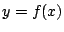
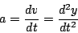
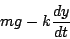

|
|
|
|
|Instituto Tecnológico de Costa Rica|Escuela de Matemática| M. Sc. Geovanni Figueroa M. |
|
|
IntroducciónMuchas de las leyes de la naturaleza, en física, química o astronomía, encuentran su expresión más natural en el lenguaje de las ecuaciones diferenciales. Son asimismo abundantes en la propia matemática, especialmente en la geometría.
Es fácil comprender la razón que se oculta tras la amplia gama
de aplicaciones de las ecuaciones diferenciales. Recuerde que si
 es una función, su derivada se puede interpretar como
la razón de cambio de
El siguiente ejemplo ilustra lo anterior. Por la segunda ley de
Newton, la aceleración
Supongamos, por ejemplo, que un cuerpo de masa

es la razón de cambio de la velocidad. Con esta notación, ecuación 1.1 se convierte en
Si alteramos la situación, admitiendo que el aire ejerce una fuerza de resistencia proporcional a la velocidad, como se muestra en la figura 1 , la fuerza total que actúa sobre el cuerpo es

y la ecuación 1.1 se reduce a
Las ecuaciones diferenciales 1.2 y 1.3 expresan las características esenciales de los procesos físicos considerados.
Figura 1
|